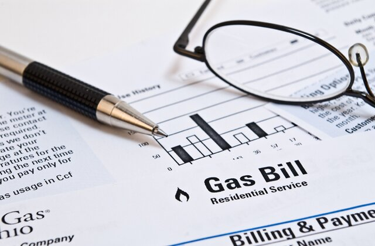

This web-application is designed to provide you with a general breakdown of your personal financial spendings and provide you with some feedback on what changes can be made to improve your budget power. Financial advisors will often refer the 50/30/20 rule as a recommended method for breaking down our financial health into 3 large categories.
The largest portions of our financial spending are dedicated towards maintaining necessities such as housing, groceries, and bills. This section covers the highest priority and most essential needs to every day living. And although this category comprises of the necessary component for basic living, we can certainly over spend on necessities that may exceed our 50% budget. For example, housing is fundamental necessity for every human, however it can also be accessible for us to over-cap our housing budget.
Personal Spending is largely where a majority of the population exceeds their budget in. It can be difficult to understand where we over-exceed those limits, but by visually laying out the amount and category of where we make those spendings can help us become more aware of which categories we can improve on.
Our long-term financial goal is to be able to have security in large financial down payments such as a home, retirement, and college for your children. Not only does savings present opportunities for future investments, but it acts as a buffer against financial emergencies to better prepare you for if those possibilities are to ever occur.
As a first step, let's begin by looking at how much you take in from your income to give us a basis for how much can be allocated towards your total expenses. Below you will enter your monthly earnings before tax.